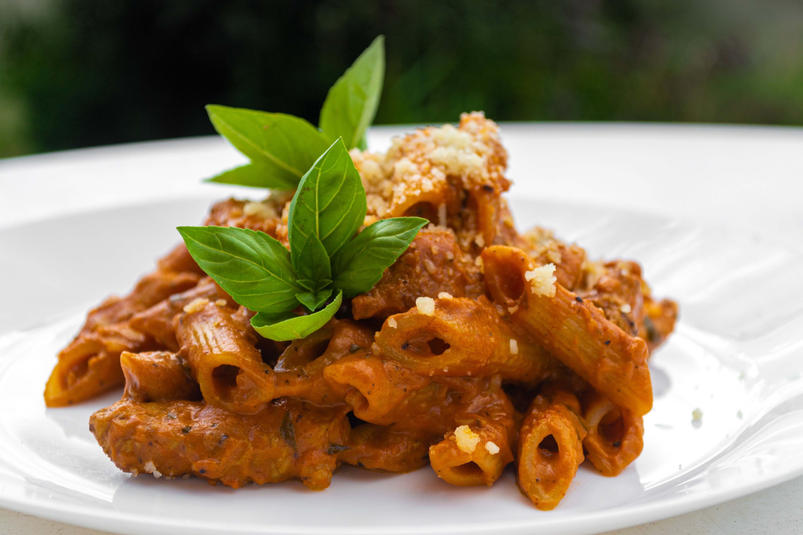

INGREDIENTES
1 colher de azeite
1 colher de margarina
1 cebola grande
2 dentes de alho picadinhos
1 lata de tomate pelado
2 pitadas de pimenta do reino em pó
Salsinha picada
Queijo parmesão ralado
2 linguiças calabresa picadinha e sem pele
250 g de penne cozido al dente
MODO DE PREPARO
Em uma panela aqueça o azeite e derreta a margarina.
Doure a cebola e o alho, em seguida acrescente a linguiça e deixe refogar.
Adicione o tomate picado com o caldo, acrescente a pimenta do reino e deixe apurar no fogo brando até engrossar ligeiramente.
Espalhe sobre o macarrão, salpique a salsa e o queijo parmesão ralado. Sirva em seguida.